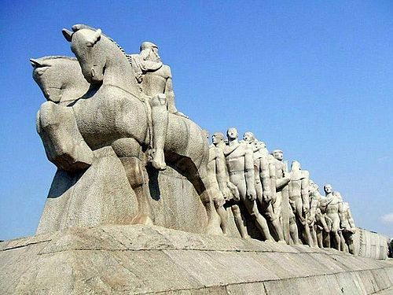
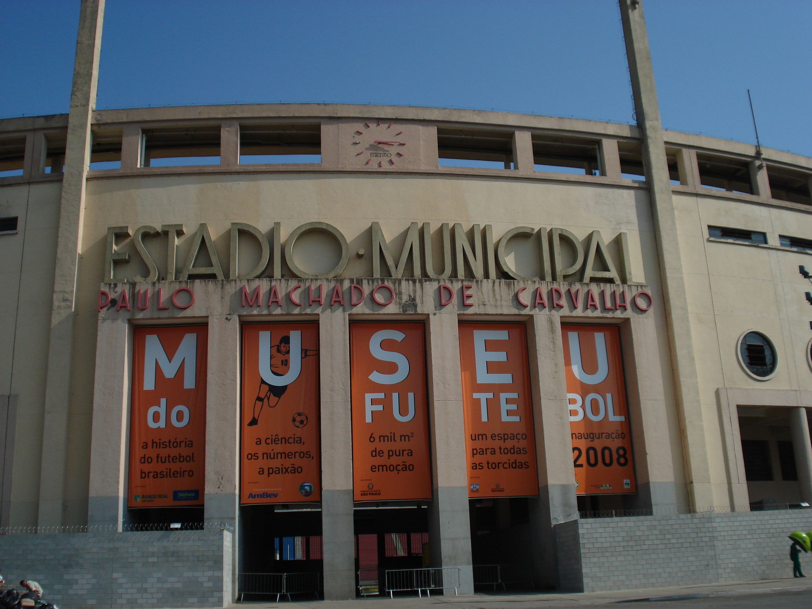

Roots Guide
Pontos Historicos

Monumento às Bandeiras
Monumental em homenagem aos bandeirantes que exploraram e expandiram os sertões brasileiros nos séculos XVII e XVIII. Representa uma caravana com bandeirantes, indígenas, negros, mamelucos, etc., empurrando uma canoa e avançando em direção ao interior do país. Curiosidades: Feito com 240 blocos de granito de cerca de 50 toneladas cada. Está posicionado no eixo sudeste-noroeste, simbolizando o “caminho” de expansão territorial. Há uma inscrição no pedestal com versos de poetas: de um lado Cassiano Ricardo, de outro Guilherme de Almeida. Uma lenda urbana: dizem que “empurra-empurra” ou “deixa-que-eu-empurro”, referindo-se à canoa — embora pareça que só quem está por trás “faz” o esforço. A obra foi idealizada em 1920, quando Brecheret tinha apenas 26 anos e estava ligado ao grupo modernista da Semana de Arte Moderna de 1922. Endereço: Praça Armando de Salles Oliveira, Parque do Ibirapuera, São Paulo, SP. Link do Maps: link

Museu do Futebol
Inaugurado em 29 de setembro de 2008, o Museu do Futebol é dedicado à história e impacto do futebol brasileiro e mundial. Está localizado no Estádio do Pacaembu, um dos mais tradicionais do Brasil. Curiosidades: O museu foi projetado para celebrar o IV Centenário da cidade de São Paulo. Une tecnologia e emoção através de exposições interativas. Endereço: Praça Charles Miller, s/n – Pacaembu, São Paulo – SP Data de Fundação: 29 de setembro de 2008 Quem construiu: Fundação Roberto Marinho Material: Concreto, vidro e aço Celebração: O museu realiza eventos e exposições especiais durante o mês de setembro em comemoração à sua inauguração. Valor de entrada: R$ 20 (inteira) Link do Maps: link

Museu de Arte de São Paulo (MASP)
O MASP é um museu de arte particular e sem fins lucrativos, fundado em 2 de outubro de 1947 por Assis Chateaubriand. É reconhecido como um dos principais centros culturais do país e um dos museus mais visitados do Brasil. O edifício original, projetado por Lina Bo Bardi, foi inaugurado em 1968. Em 2024, foi inaugurado um novo prédio em homenagem a Pietro Maria Bardi, primeiro diretor artístico do museu. Curiosidades: O MASP foi o primeiro museu moderno do Brasil e é conhecido por seu vão livre de 70 metros, que permite uma praça pública sob o edifício. O prédio, projetado por Lina Bo Bardi, é um dos cartões-postais de São Paulo. Endereço: Avenida Paulista, 1578 – Bela Vista, São Paulo – SP Link do Maps: link